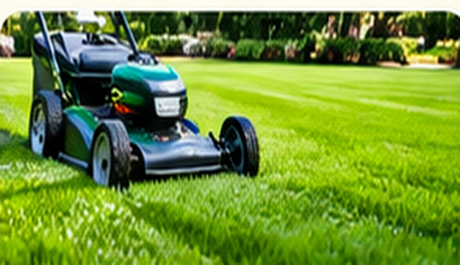
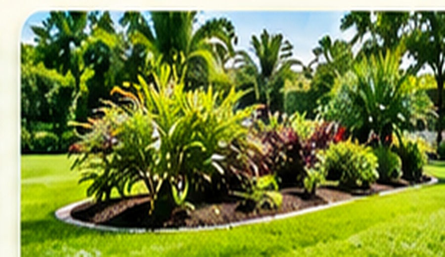
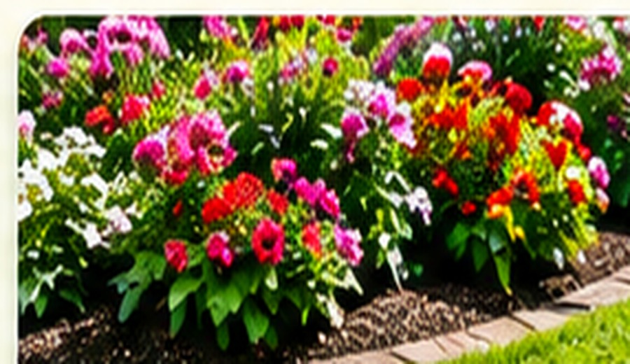
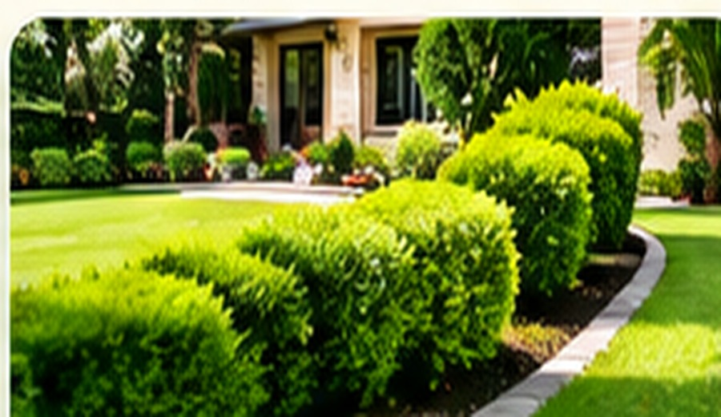
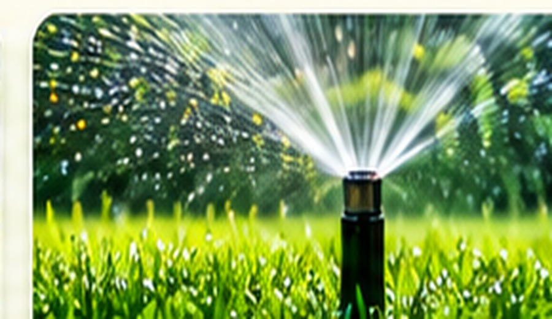

01 / LAWNCARE
General Lawncare
Keep your lawn neat, healthy and beautifully maintained with professional care.
JMD 8,000Book service →
Professional landscaping and beautification services that bring out the best in your property — from a freshly maintained lawn to vibrant garden beds.
Based in St. Ann and serving customers islandwide, Yardscape helps homes and businesses look their best with dependable landscaping and beautification services. Choose a service and request a convenient appointment online.
Explore our services and choose the right way to refresh your property.

Keep your lawn neat, healthy and beautifully maintained with professional care.

Refresh and maintain your garden beds for a tidy, vibrant outdoor space.

Add colour, texture and life to your property with thoughtful flower planting.

Clean, shaped hedges that give your landscape a crisp, finished look.

Practical watering solutions to help keep your outdoor space looking fresh.
Have a question or need a quote? We'd be happy to hear from you.